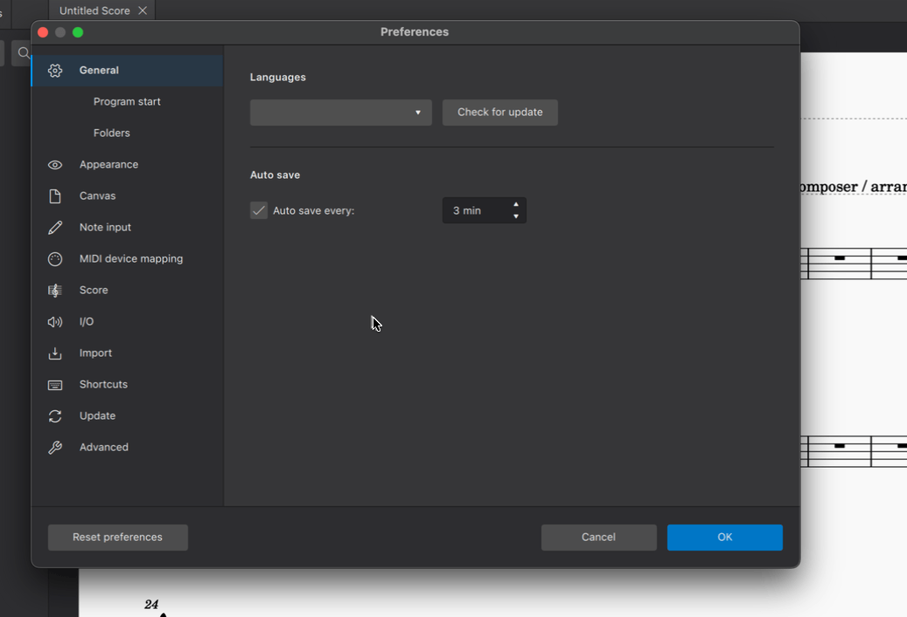
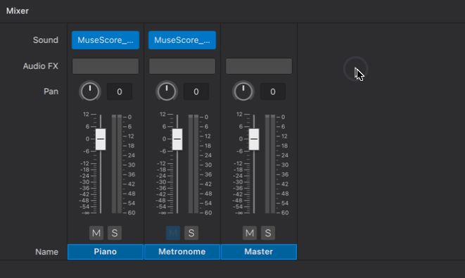

SoundFonts
MuseScore uses virtual instruments to create audio for playback. SoundFont files (.sf2, .sf3) are one of the supported formats . An sf2 or sf3 file contains all the audio data for one or more virtual instruments.
MuseScore comes packaged with its own native SoundFont, MS Basic, which contains most of the instrument sounds you need for score playback.
You can also add and use custom SoundFonts—many are available free online. See also the list in SoundFonts and SFZ files (MS3 handbook).
Install a SoundFont
Once you’ve downloaded a SoundFont to your computer, there are two ways to install a SoundFont in MuseScore 4:
- Drag and drop the SoundFont file into MuseScore 4.
- Place the SoundFont file in the MS4 user directory named "SoundFonts".
Drag and drop installation
- Open MuseScore
- Open your OS file manager (Windows: File Explorer, macOS: Finder)
- Locate the SoundFont file
- Left-click and hold on the SoundFont file in the file manager window
- Drag the file over to MuseScore's window * If MuseScore's window isn't visible, drag the file over MuseScore's icon in the system bar to reveal MuseScore's window
- Release the mouse button to "drop" the file on MuseScore
A dialog should appear offering to install the SoundFont file to the correct location.
File directory installation
It's also possible to manually install SoundFont files to the correct location. By default, this location is \~/Documents/MuseScore4/SoundFonts, where \~ (tilde) represents your home directory. The full path to this location is:
- Windows:
C:\Users\USERNAME\Documents\MuseScore4\SoundFonts - macOS:
/Users/USERNAME/Documents/MuseScore4/SoundFonts - Linux:
/home/USERNAME/Documents/MuseScore4/SoundFonts
SoundFont files placed in this folder will automatically become available for use in MuseScore.
Add or change SoundFont directory
It's also possible to specify alternate location(s) to store SoundFont files instead of—or in addition to—the default location mentioned above. SoundFont files placed at any specified location will be available in MuseScore.
To specify an alternate SoundFont location:
- Open Preferences (Mac: MuseScore > Preferences or shortcut Cmd+;. Windows: Edit > Preferences)
- Select Folders (prior to MuseScore 4.2 this was under the General category)
- Click the SoundFonts folder icon
- Click Add directory in the dialog that appears
- Choose and Open the folder location where you want MuseScore to look for SoundFont files
- Repeat steps 1-5 to add further directories (optional)
- Click OK to finish. The specified directory (or directories) will appear in the SoundFonts text field.
- Click OK in the Preferences dialog to confirm your selection.

Using sounds from a SoundFont
Once a SoundFont is installed, here's how to use it in MuseScore:
- Open the Mixer (shortcut: F10)
- Locate the column for the instrument that you want to change the sound of
- Mouse over this instrument's plugin slot in the row marked Sound (screen reader users: tab until you hear "sound menu")
- Click the dropdown arrow that appears
- Hover over SoundFonts
- Select the SoundFont you wish to assign to that particular instrument
As of MuseScore 4.2, it possible to choose a specific sound within the SoundFont. The default setting Choose automatically instructs MuseScore to use sound(s) that matches the instrument in the score.
On some instruments (such as Violin) using MS Basic, verbal articulation text items (such as legato, pizz. arco) create proper playback only if Choose automatically is selected, see musescore at github. Therefore it is preferable to change the Musescore Instrument, see Setting up your score : Changing instruments after score creation chapter. Choose automatically only works with SoundFonts that obey the General MIDI standard, see Musescore 3 handbook SoundFonts and SFZ files: soundfonts chapter.
Shown below is soundfont selection in MuseScore 4.1.1.\

Selecting individual sounds
As mentioned above, MuseScore 4.2 reintroduced the ability to choose individual sounds within a SoundFont.
Prior to MuseScore 4.2, you had to make do with the automatic choice, or employ a workaround where each individual sound was packaged into a separate SoundFont file. A special version of MS Basic was created for this purpose. For other SoundFonts, you could split them into individual sound files using a free tool such as sf2-split or SF2 Splitter. For VSTs you could use a VST sampler such as Sforzando, FluidSynthVST, or juicysfplugin.
Editing Soundfonts
This is possible using 3rd party software such as Polyphone. For more information, see also Soundfont, MIDI velocity and instruments.xml (Developer’s Handbook).
Uninstall a SoundFont
To uninstall a SoundFont, simply open the folder where its file is installed and delete it.
A note on the Zerberus player and SFZs
Users of MuseScore 3.6 and earlier may be accustomed to using the Zerberus player, which supports the .sfz file format. In building a new system that now supports VST instruments, changes were required that necessitated the removal of the Zerberus player, as well as the Synthesizer found in previous versions of MuseScore. Consequently, some functionality has been lost in this process, including the ability to map specific instrument sounds like pizzicato and tremolo to specific MIDI channels. Our highest priority in future releases of MuseScore 4 is to again support this functionality for VST, SoundFont and the Muse Sounds libraries. Users who rely extensively on mapping .sfz sounds to specific performance directions are advised to continue using earlier versions of MuseScore until we re-enable this capability in MuseScore 4. It is worth mentioning that the new systems we are planning will be much more flexible, easy to use and powerful than those found in MuseScore 3.
For those who wish to still use SFZ sounds in MuseScore 4, good alternatives for Windows and macOs would be the open source VST samplers Sfizz or Sforzando, both of which support SFZ playback. Currently, the use of SFZ is not possible in MuseScore4 for Linux.
See also
- SoundFonts and SFZ files (MS3 handbook)
Alternatives to soundfonts: